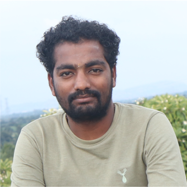

|  |
Rudresh P V
Fresher Front End developer, Android Developer and Software Tester
|
TECHNICAL COURSE
Software testing
- Proficiency in Software testing
- Strong in Software Development Life Cycle(SDLC).
- Good knowledge on Waterfall Model, Spiral Model, Verification and Validation Model.
- Prototype Model, Derived Model, Hybrid Model.
- Good Knowledge on Functional Testing, Integration Testing, System Testing, Globalization testing, Adhoc testing, Smoke testing, Usability testing.
- Good knowledge on Performance testing and defect.
- Strong in Software Test Life Cycle(STLC).
- Proficiency in Agile Model.
Core Java
- Very good knowledge in static and non-static.
- Very good knowledge on method overriding and method overloading.
- Good understanding on polymorphism.
- Very good understanding on Inheritance.
- Good knowledge on Abstraction.
- Proficiency in Encapsulation.
SQL(Oracle 11G)
- Good knowledge in Writing Queries.
- Good knowledge on DML, DCL, DQL,TCL, DDL.
- Good understanding in RDBMS Concepts.
- Having knowledge in Joins , Subquery, Co- Related subquery, Normalizations.
Selenium
- Good knowledge in Selenium Architecture
- Good understanding in Selenium java Architecture
- Having knowledge in Html Concepts
CNC PROGRAMING
Attended Skill training On CNC Program of the sector Capital Goods under Chief Ministers Kaushalya Karnataka
Yojana Training Program of Skill Development Entrepreneurship & Livelihood Department, for the year 2019-20 for
having successfully undergone training Program at Govt. tool room Training Center, Tumkur.
Fundamental, Applications and Constructions of SOLAR PLANTS
Attended Workshop on Fundamental, Applications and Constructions of SOLAR PLANTS at HMSIT TUMKUR. The
Skill Training Program Organized by RENSOL ECOTECH and HMSIT Tumakuru.
TECHNICAL ACTIVITIES
Plastic waste Management Plant
Visited and Gained knowledge about Plastic waste management at Plastic waste management plant. Behind
HMSIT Tumakuru.
Granite Cutting and Surface Finishing Unit
Visited and Studied About Granite Cutting And Surface finishing Plant at Hirehally Industrial area Tumakuru .
Rane Engine Valves PVT LTD
Visited and Gained knowledge about Engine Valve Manufacturing proses at Rane engine Valves PVT LTD,
herehally Industrial area Tumakuru.
\